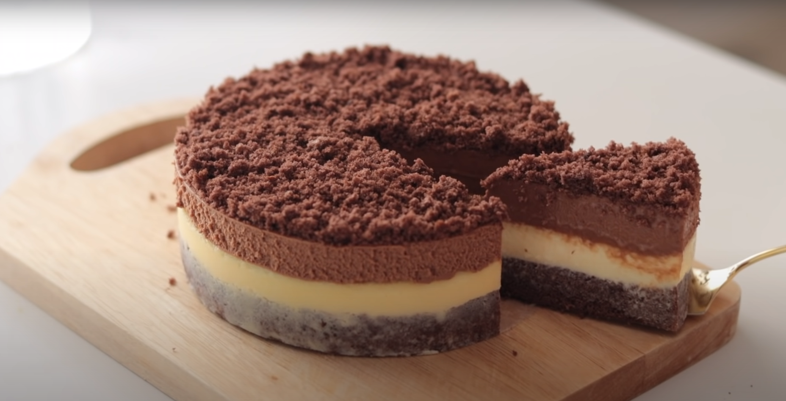

Double Çikolatalı Chesecake
Malzemeler:
Kakaolu Pandispanya
2 yumurta
60 gr şeker
50 gr kek unu
10 gr kakao
20 gr krema
Penirli Krema(Fırınlanacak)
60 gr kuvertür beyaz çikolata
80 gr krema
100 gr krem peynir
90 gr mascarpone peyniri
30 gr şeker
1 yumurta
10 gr un
1 çay kaşığı vanilya özü
Penirli Krema
110 gr mascarpone peyniri
20 gr şeker
50 gr kuvertür sütlü çikolata
100 gr krema
2.5g yaprak jelatin
15 gr sıcak su
Yapılışı:
Kakaolu Pandispanya
Yumurta ve şekeri çırp.
Sıcak su dolu bir kabın üstüne koyup
krema kıvamına gelene kadar çırp.
Kuru malzemeleri eleyerek ekle ve karıştır.
Kremayı ekle.
15 cm'lik kalıpta 170 derecede 25-30 dk pişir.
Penirli Krema(Fırınlanacak)
Kremayı kaynama noktasına gelene kadar ısıt
ve içine çikolatayı ekle.
Peynirleri karıştırıp yavaşça çırp.
Yumurtayı ekle.
Krema ve çikolata karışımını ekle.
Kalan malzemeleri harca yedir.
Dinlenmiş pandispanyayı ikiye böl.
Yarısının üzerine peynirli karışımı dök.
150 derecede 40 dk pişir.
Penirli Krema
Kremayı kaynama noktasına gelene kadar ısıt
ve içine çikolatayı ekle.
Sıcak su içerisinde jelatini eritç
Peyniri yavaşça çırp.
Krema ve çikolata karışımını ekle.
Jelatin ve şekeri ekle.
Fırından çıkıp dinlenmiş chesecake üzerinde dök.
Buzlukta yarım saat dinlendir.
Kalan keki rondodan geçip üzerine dök.
Servise hazır!